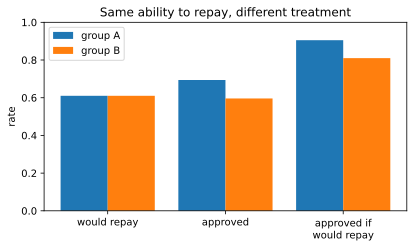

Chapter 13: Ethics, Privacy and Reproducibility¶
Doing data science that is fair to people and that others can check
Learning outcomes
After this chapter you should be able to:
- explain why ethical questions arise at every stage of the data science workflow;
- distinguish direct identifiers from quasi-identifiers, and apply data minimisation;
- pseudonymise, generalise and suppress data, check k-anonymity, and explain why de-identification can fail;
- name the main sources of bias in data and models, and compute simple fairness measures by group;
- report results honestly, with their uncertainty and limitations;
- make an analysis reproducible: seeds, recorded versions, scripted steps, untouched raw data and version control.
Data science is done with data about people, for decisions that affect people: who gets a loan, which neighbourhoods get more inspections, which patients are called for a check-up, which job applicants are shortlisted. The same techniques that find useful patterns can expose private lives, repeat old injustices at scale, or give false confidence in a wrong answer. This chapter treats these risks as part of the technical work, because that is where they are created and where most of them can be prevented. It also covers reproducibility: whether someone else (including you, six months later) can repeat the analysis and get the same result, which is the basis of trust in any finding.
import hashlib
import numpy as np
import pandas as pd
import matplotlib.pyplot as plt
13.1 Ethics across the workflow¶
Every stage of the workflow of Chapter 1 has its own ethical questions.
| Stage | Questions to ask |
|---|---|
| Ask | Who benefits from the answer, and who could be harmed? Should this be predicted at all? |
| Get data | Was it collected with consent, for a purpose compatible with this one? Do we need all of it? |
| Clean | Do our cleaning choices (dropping rows, filling values) affect some groups more than others? |
| Explore | Are some groups missing or under-represented? |
| Model | Does the model use features that stand in for sensitive characteristics? |
| Evaluate | Is it equally accurate for different groups? What happens to people when it is wrong? |
| Communicate | Are uncertainty and limitations stated? Could the result be misread or misused? |
Table 13.1. Ethical questions at each stage of the workflow.
No checklist settles these questions mechanically. They call for judgement, for knowledge of the setting, and often for the views of the people affected. What a data scientist can always do is notice them, measure what can be measured, and say clearly what was decided and why.
13.2 Privacy¶
Personal data is any information relating to an identifiable person. Some fields identify a person directly: name, phone number, email address, government ID number. These are direct identifiers. Other fields do not identify anyone alone but can in combination: date of birth, PIN code, gender, occupation. These are quasi-identifiers. In many populations, the combination of full date of birth, gender and postal code is unique for a large share of people, so a table with names removed but those three columns kept may still identify almost everyone in it.
Many countries have data protection laws, such as the European Union's General Data Protection Regulation (GDPR) and India's Digital Personal Data Protection Act, 2023. Their details differ and are a matter for legal advice, but they share principles that are good practice everywhere:
- Purpose limitation: collect data for a stated purpose and do not reuse it for unrelated purposes without a proper basis.
- Data minimisation: collect and keep only what the purpose needs.
- Consent and transparency: people should know what is collected about them and why.
- Security: protect data against unauthorised access; restrict who can see identifying fields.
- Retention limits: delete data when it is no longer needed.
Key idea
The safest personal data is data you never collected. Before asking how to protect a column, ask whether the analysis needs it at all.
De-identification techniques¶
When personal data must be used, several techniques reduce the risk. A small table of (fictional) patient records shows them:
patients = pd.DataFrame({
"name": ["A. Rao", "B. Singh", "C. Das", "D. Iyer", "E. Khan", "F. Roy", "G. Paul", "H. Nair"],
"phone": ["98100 11111", "98100 22222", "98100 33333", "98100 44444",
"98100 55555", "98100 66666", "98100 77777", "98100 88888"],
"age": [34, 36, 52, 57, 33, 55, 38, 51],
"pin": ["411001", "411002", "560001", "560002", "411003", "560003", "411004", "560004"],
"condition": ["asthma", "diabetes", "diabetes", "hypertension", "asthma", "diabetes", "asthma", "hypertension"],
})
print(patients)
name phone age pin condition
0 A. Rao 98100 11111 34 411001 asthma
1 B. Singh 98100 22222 36 411002 diabetes
2 C. Das 98100 33333 52 560001 diabetes
3 D. Iyer 98100 44444 57 560002 hypertension
4 E. Khan 98100 55555 33 411003 asthma
5 F. Roy 98100 66666 55 560003 diabetes
6 G. Paul 98100 77777 38 411004 asthma
7 H. Nair 98100 88888 51 560004 hypertension
Removal. Drop direct identifiers that the analysis does not need, such as names and phone numbers.
Pseudonymisation. Replace an identifier with a code, so that records of the same person can still be linked (across visits, say) without revealing who it is. A cryptographic hash of the identifier combined with a secret value (a salt, or better a key) gives a stable code; without the secret, the code cannot be reversed by trying all possible phone numbers.
SECRET = "replace-with-a-long-random-secret-kept-out-of-the-code"
def pseudonym(value, secret=SECRET):
return hashlib.sha256((secret + value).encode("utf-8")).hexdigest()[:12]
deid = patients.assign(pid=patients["phone"].map(pseudonym)).drop(columns=["name", "phone"])
print(deid[["pid", "age", "pin", "condition"]].head(3))
pid age pin condition
0 251d1fd16c70 34 411001 asthma
1 0a169f24a0a3 36 411002 diabetes
2 7a38048e3edd 52 560001 diabetes
Caution: pseudonymised data is still personal data
A pseudonym can be linked back to the person by anyone who holds the secret, and the remaining columns may identify people anyway. Hashing a phone number without a secret is especially weak: there are only so many phone numbers, and an attacker can hash them all and look up the codes. Keep the secret separate from the data, and treat pseudonymised data with nearly the same care as the original.
Generalisation. Make quasi-identifiers coarser: exact age becomes an age band, a six-digit PIN code becomes its first three digits (a wider area), a date of birth becomes a year.
deid["age_band"] = pd.cut(deid["age"], bins=[30, 40, 50, 60], right=False, labels=["30-39", "40-49", "50-59"])
deid["area"] = deid["pin"].str[:3]
released = deid[["pid", "age_band", "area", "condition"]]
print(released)
pid age_band area condition
0 251d1fd16c70 30-39 411 asthma
1 0a169f24a0a3 30-39 411 diabetes
2 7a38048e3edd 50-59 560 diabetes
3 9a9500beea8d 50-59 560 hypertension
4 b23f216cd50c 30-39 411 asthma
5 7260b72d69ad 50-59 560 diabetes
6 37950db4bce6 30-39 411 asthma
7 3e66d62ddec6 50-59 560 hypertension
k-anonymity¶
A table is k-anonymous (with respect to a set of quasi-identifiers) if every combination of their values that appears is shared by at least \(k\) records. Then any one person is indistinguishable from at least \(k - 1\) others on those fields. Checking it is a groupby:
def k_anonymity(df, quasi):
return int(df.groupby(quasi, observed=True).size().min())
print("original (age, pin): k =", k_anonymity(deid, ["age", "pin"]))
print("generalised (band, area): k =", k_anonymity(released, ["age_band", "area"]))
print(released.groupby(["age_band", "area"], observed=True)["condition"].agg(list))
original (age, pin): k = 1
generalised (band, area): k = 4
age_band area
30-39 411 [asthma, diabetes, asthma, asthma]
50-59 560 [diabetes, hypertension, diabetes, hypertension]
Name: condition, dtype: object
In the original table every person is unique on age and PIN code (\(k = 1\)). After generalisation every combination is shared by four people (\(k = 4\)). But look at the groups' conditions: if everyone in a group had the same condition, knowing that someone is in the group would reveal their condition even with \(k = 4\). Here each group mixes conditions, but this weakness of k-anonymity is real, and stronger notions (such as requiring diverse sensitive values within each group, or the mathematical framework of differential privacy, which adds carefully calibrated noise to published results) exist for that reason.
Suppressing small counts. Published tables of counts leak information when cells are small: "1 patient aged 50–59 in area 411 has hypertension" identifies someone to anyone who knows them. A common rule is to suppress or round cells below a threshold before publication.
Re-identification¶
De-identified datasets have repeatedly been re-identified by linking them with other data that contains names together with the same quasi-identifiers (public records, social media, other leaked datasets). The lesson is general: whether a dataset identifies people depends not only on what it contains but on what else exists. Release as little detail as the purpose allows, and prefer sharing aggregates to sharing records.
13.3 Bias and fairness¶
A model learns patterns from data, and if the data reflects unequal treatment or unequal measurement, so will the model. Bias enters in several ways:
- Sampling bias: the data does not represent the population the model will be used on (a health model trained mostly on one region or age group).
- Measurement bias: a variable is measured differently, or with different accuracy, for different groups.
- Historical bias: the data faithfully records past decisions that were themselves unfair (past hiring decisions used as the "correct" labels for a hiring model).
- Proxy features: a model that is not given a sensitive attribute (gender, caste, religion) can still pick it up through correlated features, such as a PIN code or the name of a college.
Measuring fairness by group¶
The first step is to measure. Here is a simulated lending scenario. Applicants belong to group A or group B. Their true ability to repay is distributed identically in the two groups, but the historical data recorded group B's repayment ability through a noisier and lower-scored "credit history" feature, as can happen when one group has had less access to formal credit. A model is trained on that data and used to approve loans.
from sklearn.linear_model import LogisticRegression
from sklearn.model_selection import train_test_split
rng = np.random.default_rng(13)
n = 4000
group = rng.choice(["A", "B"], n)
ability = rng.normal(0, 1, n) # same distribution in both groups
income = ability * 0.8 + rng.normal(0, 0.6, n)
history = np.where(group == "A", ability + rng.normal(0, 0.5, n),
ability - 0.7 + rng.normal(0, 1.0, n)) # biased, noisier for B
repaid = (ability + rng.normal(0, 0.5, n) > -0.3).astype(int)
loans = pd.DataFrame({"group": group, "income": income, "history": history, "repaid": repaid})
X = loans[["income", "history"]] # the group itself is NOT a feature
X_tr, X_te, y_tr, y_te, g_tr, g_te = train_test_split(X, loans["repaid"], loans["group"],
test_size=0.5, random_state=0)
model = LogisticRegression().fit(X_tr, y_tr)
approve = model.predict(X_te)
report = pd.DataFrame({"group": g_te.values, "repaid": y_te.values, "approved": approve})
def rates(d):
good = d["repaid"] == 1
return pd.Series({
"applicants": len(d),
"actual repay rate": d["repaid"].mean(),
"approval rate": d["approved"].mean(),
"approved | would repay": d.loc[good, "approved"].mean(), # true positive rate
"approved | would default": d.loc[~good, "approved"].mean(), # false positive rate
})
fair = report.groupby("group")[["repaid", "approved"]].apply(rates).round(3)
print(fair.T)
group A B
applicants 1032.000 968.000
actual repay rate 0.610 0.610
approval rate 0.694 0.596
approved | would repay 0.905 0.810
approved | would default 0.363 0.262
The two groups would repay at the same rate (61%), yet group B is approved noticeably less often, and, more tellingly, among applicants who would repay, a smaller share of group B is approved. The model never saw the group label; the bias came in through the history feature, which measures group B's ability less accurately and systematically lower.
fig, ax = plt.subplots(figsize=(6.5, 3.4))
metrics = ["actual repay rate", "approval rate", "approved | would repay"]
xpos = np.arange(len(metrics))
ax.bar(xpos - 0.2, fair.loc["A", metrics], width=0.4, label="group A")
ax.bar(xpos + 0.2, fair.loc["B", metrics], width=0.4, label="group B")
ax.set_xticks(xpos, ["would repay", "approved", "approved if\nwould repay"])
ax.set_ylim(0, 1)
ax.set_ylabel("rate")
ax.set_title("Same ability to repay, different treatment")
ax.legend()
fig.savefig("fairness.svg")

Several fairness criteria are in common use. Demographic parity asks for equal approval rates across groups. Equal opportunity asks for equal true positive rates: those who would repay should be approved at the same rate whatever their group. Equalised odds asks for equal true positive and false positive rates. When the groups' base rates differ, these criteria generally cannot all hold at once, so choosing between them is a value judgement about what fairness means in the setting, not a technical detail.
Caution: removing the sensitive column is not enough
The model above never used the group label and was still unfair, because another feature carried the group's disadvantage. "We don't use gender (or caste, or religion) in the model" is not a demonstration of fairness. Fairness has to be measured, which requires knowing group membership for at least an evaluation sample.
What can be done? Improve the data (measure the disadvantaged group's ability better, collect more representative data); reconsider features that act as proxies; adjust decision thresholds per group to equalise a chosen criterion, where that is lawful and appropriate; and, sometimes, decide that a decision should not be automated at all. Whatever is done, report the group-wise metrics with the model.
13.4 Honest analysis and communication¶
Ethics also concerns the truthfulness of results. Earlier chapters met the main ways analyses mislead:
- Charts that distort: bar charts not starting at zero, unequal scales, cherry-picked time windows (Section 6.8).
- Fishing for significance: running many tests and reporting the ones with \(p < 0.05\); adjusting the analysis until a desired result appears (Section 7.6).
- Optimistic evaluation: tuning on the test set, leakage, no baseline (Chapter 10).
- Causal language for associations: "studying causes higher marks" from observational data (Section 6.6).
- Hiding uncertainty: reporting a single number without an interval, or with false precision.
The remedy is a habit of reporting that a sceptical colleague could check: the question, the data and its limitations, every exclusion and cleaning decision, the methods, the uncertainty, and what the result does not show.
13.5 Reproducibility¶
An analysis is reproducible if someone else can take the same data and code and obtain the same results. It sounds automatic for computer work, but in practice results are often impossible to recreate: a cell run out of order in a notebook, a file edited by hand, a library that changed its defaults, an unrecorded random seed. Reproducibility is what lets errors be found and results be trusted.
The practices are simple:
- Never edit raw data. Keep the original files read-only, and do every cleaning step in code (Section 5.11), so that the path from raw data to result is complete.
- Fix random seeds. Pass
random_stateto scikit-learn and usenp.random.default_rng(seed), as this book does everywhere. - Record the environment. Note the versions of Python and of each library; the same code can give different results, or fail, under other versions.
- Script the analysis. Put the steps in functions and scripts that run from start to finish. In a notebook, regularly use "restart and run all" to confirm the notebook runs top to bottom and produces what it shows.
- Use version control. Keep code (and small data or its description) in a version-control system such as git, so that every result can be tied to the exact code that produced it.
- Document decisions. A short text file explaining the data source, each cleaning decision and the reasons for the modelling choices is worth more than any amount of clever code.
Recording versions takes two lines:
import sys, sklearn, matplotlib
print("Python", sys.version.split()[0])
print("numpy", np.__version__, "| pandas", pd.__version__,
"| matplotlib", matplotlib.__version__, "| scikit-learn", sklearn.__version__)
Python 3.12.10
numpy 2.5.3 | pandas 3.0.5 | matplotlib 3.11.2 | scikit-learn 1.9.0
A file listing the exact versions, conventionally requirements.txt, lets others install the same environment with pip install -r requirements.txt:
numpy==2.5.3
pandas==3.0.5
matplotlib==3.11.2
scikit-learn==1.9.0
A seed makes a random result repeatable, which is easy to check:
from sklearn.ensemble import RandomForestClassifier
def fit_score(seed):
m = RandomForestClassifier(n_estimators=50, random_state=seed).fit(X_tr, y_tr)
return round(m.score(X_te, y_te), 4)
print(fit_score(1), fit_score(1), fit_score(2))
0.7565 0.7565 0.7535
The same seed gives exactly the same score; a different seed gives a slightly different one. That difference is also informative: if a result changes materially with the seed, it was never robust, and reporting the spread over several seeds is more honest than reporting the best one.
Note: reproducible is not the same as correct
A reproducible analysis can still be wrong, but its errors can be found, because anyone can rerun it, inspect each step and change one thing at a time. An irreproducible analysis cannot even be checked.
13.6 A checklist for responsible projects¶
Example 13.1: Questions to answer before a model is used
- Purpose: What decision will this support, and who is affected by it?
- Data: Where did the data come from, with what consent, and which groups are missing or under-represented?
- Privacy: Which personal fields are used, and are they all necessary? How are they protected, and when will they be deleted?
- Performance: How does the model compare with a baseline, measured without leakage, with uncertainty?
- Fairness: Are error rates similar across relevant groups? If not, what has been done, and is the remaining difference acceptable?
- Failure: What happens to a person when the model is wrong, and can they challenge the decision?
- Reproducibility: Can the result be recreated from raw data with recorded code, seeds and versions?
- Monitoring: Who checks the model after deployment, and how often?
13.7 Summary¶
Summary
- Ethical questions arise at every stage of the workflow; notice them, measure what can be measured, and document decisions.
- Direct identifiers name people; quasi-identifiers identify them in combination. Collect only what the purpose needs.
- Remove, pseudonymise (keyed hashes, secret kept separate), generalise and suppress; check k-anonymity with a
groupby. De-identified data can be re-identified by linkage, and pseudonymised data is still personal data. - Bias enters through sampling, measurement, historical labels and proxy features. Removing a sensitive column does not remove bias.
- Measure fairness by group: approval rates (demographic parity), true positive rates (equal opportunity), and false positive rates (equalised odds). Choosing a criterion is a value judgement.
- Report honestly: undistorted charts, no fishing, no leakage, no causal claims from associations, and uncertainty stated.
- Reproducibility: raw data untouched, seeds fixed, versions recorded, steps scripted, code under version control, decisions documented.
13.8 Exercises¶
Exercise 1
Classify each field as a direct identifier, a quasi-identifier, or neither: (a) email address; (b) year of birth; (c) blood pressure reading; (d) PIN code; (e) passport number; (f) occupation.
Answer
Direct identifiers: (a) email address, (e) passport number. Quasi-identifiers: (b) year of birth, (d) PIN code, (f) occupation, which can identify people in combination. (c) A blood pressure reading is a sensitive attribute but not normally an identifier (though in a small dataset an unusual value combined with other fields could help identify someone).
Exercise 2
Why is hashlib.sha256(phone.encode()).hexdigest() a weak way to pseudonymise ten-digit phone numbers? How does the chapter's pseudonym function improve on it?
Answer
There are at most \(10^{10}\) ten-digit numbers, so an attacker can hash every possible number and build a lookup table from codes back to numbers; an unsalted hash therefore hides nothing. Adding a long secret value before hashing means the attacker would also need the secret to build the table. The secret must be kept separate from the data, since anyone holding it can still re-identify.
Exercise 3
For the table below, what is the k-anonymity with respect to (age_band, area)? Generalise it to make \(k \ge 2\).
t = pd.DataFrame({"age_band": ["20-29", "20-29", "30-39", "30-39", "30-39"],
"area": ["411", "411", "411", "560", "560"]})
print(k_anonymity(t, ["age_band", "area"]))
1
Answer
\(k = 1\): the combination (30-39, 411) occurs once. One fix is to generalise the area for that band, for example replacing all areas by a coarser region, or merging the age bands to "20-39":
t2 = t.assign(age_band="20-39")
print(k_anonymity(t2, ["age_band", "area"]))
2
Now the groups are (20-39, 411) with 3 records and (20-39, 560) with 2, so \(k = 2\). Each generalisation loses detail; the art is to lose as little as needed.
Exercise 4
In the lending example, compute the false positive rate (approval among applicants who would default) for each group from fair, and say which fairness criterion the comparison relates to.
Answer
print(fair["approved | would default"])
group
A 0.363
B 0.262
Name: approved | would default, dtype: float64
This is the false positive rate per group. Comparing false positive rates (together with true positive rates) is the equalised odds criterion; equal true positive rates alone is equal opportunity.
Exercise 5
A colleague's notebook gives a different answer each time it is run from the top. List three likely causes.
Answer
For example: a random step (a train/test split, a shuffle, a random forest, k-means initialisation) without a fixed seed; cells that depend on state created by cells run earlier out of order, or on variables that have since been deleted; data read from a file or a source that changes between runs (a live database, a file someone edits). Less often: library versions that differ between machines.
Exercise 6
A city wants to use a model to decide where to send food-safety inspectors, trained on past inspection results. Name one way historical bias could enter, and one check you would make.
Answer
Past inspections may have been concentrated in certain neighbourhoods, so violations were found more often there simply because more inspections took place; a model trained on those results would send inspectors back to the same places, reinforcing the pattern. A check: compare inspection rates and violation rates per inspection across neighbourhoods, and evaluate the model on a sample of randomly chosen inspections, which are free of the old targeting.
13.9 Quiz¶
Check your understanding of Chapter 13
Exercise 1
Which of these is a quasi-identifier?
- full name
- passport number
- date of birth
- a random study number
Answer
date of birth
Exercise 2
A table is 3-anonymous on its quasi-identifiers if
- it has 3 columns
- every combination of quasi-identifier values appears at least 3 times
- 3 identifiers were removed
- 3 people can see it
Answer
every combination of quasi-identifier values appears at least 3 times
Exercise 3
Removing the sensitive attribute from a model's features
- guarantees fairness
- does not by itself guarantee fairness
- is illegal
- always lowers accuracy
Answer
does not by itself guarantee fairness
Exercise 4
Equal opportunity asks for equal
- approval rates
- true positive rates
- accuracy
- group sizes
Answer
true positive rates
Exercise 5
Which practice most directly makes a random result repeatable?
- using more data
- fixing the random seed
- using a notebook
- removing outliers
Answer
fixing the random seed
Exercise 6
What is the conventional name of the file that lists a Python project's exact package versions?
Answer
requirements.txt
Exercise 7
Pseudonymised data is
- anonymous and free to share
- still personal data
- always encrypted
- useless for analysis
Answer
still personal data